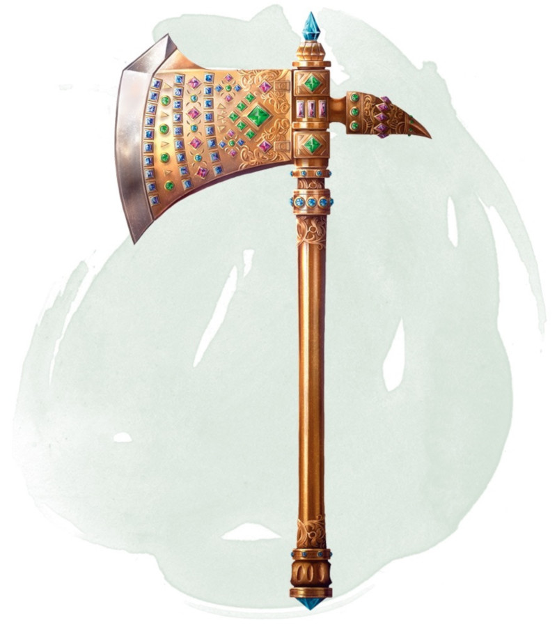

Hache des seigneurs nains
Arme (hache d'armes), artéfact (nécessite un lien)
Constatant le péril auquel faisait face son peuple, un jeune prince nain en vint à croire que ses sujets avaient besoin d'être unis. Ainsi, il choisit de forger une arme qui serait le symbole de cette union.
S'aventurant dans les profondeurs de la montagne, plus loin qu'aucun autre nain par le passé, le jeune prince atteint le cœur en fusion d'un immense volcan. Avec l'aide de Moradin, le dieu nain de la création, il fabriqua d'abords quatre outils formidables : la Pioche Brutale, la Forge Cœur-de-Montage, l'Enclume des Complaintes et Le Marteau de Fonderie. Avec eux, il forgea la Hache des seigneurs nains.
Équipé de cet artéfact, le prince retourna auprès des clans nains et leur apporta la paix. Sa hache mit un terme aux rancunes et répondit comme il se doit aux affronts. Les clans s'allièrent, repoussèrent leurs ennemis, et purent enfin profiter d'une ère de paix et de tranquillité. Ce jeune nain est aujourd'hui connu comme le Premier Roi. Lorsqu'il fut trop vieux, il transmit l'arme, qui était devenue le symbole de son autorité, à son successeur. Les héritiers légitimes se transmirent ainsi la hache de générations en génération.
Bien plus tard, pendant une période marquée par les trahisons et la vilénie, la hache fut perdue au cours d'une guerre civile sanglante fomentée par des êtres avides de son pouvoir et du statut qu'elle conférait. Des siècles ont passé, les nains cherchent encore la hache, et bon nombre d'aventuriers ont passé leur carrière à traquer les rumeurs et piller d'anciennes cryptes dans l'espoir de la trouver.
Arme magique. La Hache des seigneurs nains est une arme magique qui confère un bonus de +3 aux jets d'attaque et de dégâts effectués avec elle. La hache fonctionne également comme un ceinturon des nains, un marteau de lancer nain et une épée tranchante.
Propriétés aléatoires. La hache possède un certain nombre de propriétés déterminées aléatoirement :
• 2 propriétés bénéfiques mineures
• 1 propriété bénéfique majeure
• 2 propriétés néfastes mineures
Bénédiction de Moradin. Si vous êtes un nain lié à la hache, vous gagnez les bénéfices suivants :
• Vous êtes immunisés aux dégâts de poison.
• La portée de votre vision dans le noir augmente de 18 mètres.
• Vous gagnez la maîtrise des outils d'artisan en rapport avec la forge, le brassage de la bière, et la maçonnerie.
Invocation d'élémentaires de la terre. Si vous tenez la hache, vous pouvez utiliser votre action pour lancer grâce à elle le sort invocation d'élémentaire, et ainsi invoquer un élémentaire de la terre. Vous ne pouvez pas réutiliser cette propriété avant le prochain lever de soleil.
Voyage dans les profondeurs. Vous pouvez utiliser une action pour toucher avec l'artéfact un morceau de maçonnerie naine autour de vous (ce doit être un élément du décor) et lancer le sort téléportation grâce à la hache. Si la destination que vous espérez atteindre se trouve sous la surface de la terre, vous êtes certain d'arriver là où vous le souhaitez. Vous ne pouvez pas réutiliser cette propriété avant que 3 jours ne se soient écoulés.
Malédiction. La hache abrite une malédiction qui s'abat sur tout personnage non-nain qui se lie à elle. Même si le lien se termine, la malédiction reste présente. Chaque jour qui passe, l'apparence physique de la créature tend à ressembler de plus en plus à celle d'un nain. Au bout de sept jours, la créature ressemble à un nain typique, mais elle ne perd pas ses traits raciaux ni ne gagne ceux des nains. Les transformations physiques dues à la hache ne sont pas considérées comme magiques (et ne peuvent donc pas être dissipées), mais elles peuvent être annulées par n'importe quel effet levant les malédictions, comme les sorts restauration supérieure et délivrance des malédictions.
Détruire la hache. Le seul moyen de détruire la hache est de la plonger dans la Forge Cœur-de-Montagne, où elle a été créée. Elle doit rester dans la forge incandescente pendant cinquante années avant de succomber aux flammes et de se liquéfier.
S'aventurant dans les profondeurs de la montagne, plus loin qu'aucun autre nain par le passé, le jeune prince atteint le cœur en fusion d'un immense volcan. Avec l'aide de Moradin, le dieu nain de la création, il fabriqua d'abords quatre outils formidables : la Pioche Brutale, la Forge Cœur-de-Montage, l'Enclume des Complaintes et Le Marteau de Fonderie. Avec eux, il forgea la Hache des seigneurs nains.
Équipé de cet artéfact, le prince retourna auprès des clans nains et leur apporta la paix. Sa hache mit un terme aux rancunes et répondit comme il se doit aux affronts. Les clans s'allièrent, repoussèrent leurs ennemis, et purent enfin profiter d'une ère de paix et de tranquillité. Ce jeune nain est aujourd'hui connu comme le Premier Roi. Lorsqu'il fut trop vieux, il transmit l'arme, qui était devenue le symbole de son autorité, à son successeur. Les héritiers légitimes se transmirent ainsi la hache de générations en génération.
Bien plus tard, pendant une période marquée par les trahisons et la vilénie, la hache fut perdue au cours d'une guerre civile sanglante fomentée par des êtres avides de son pouvoir et du statut qu'elle conférait. Des siècles ont passé, les nains cherchent encore la hache, et bon nombre d'aventuriers ont passé leur carrière à traquer les rumeurs et piller d'anciennes cryptes dans l'espoir de la trouver.
Arme magique. La Hache des seigneurs nains est une arme magique qui confère un bonus de +3 aux jets d'attaque et de dégâts effectués avec elle. La hache fonctionne également comme un ceinturon des nains, un marteau de lancer nain et une épée tranchante.
Propriétés aléatoires. La hache possède un certain nombre de propriétés déterminées aléatoirement :
• 2 propriétés bénéfiques mineures
• 1 propriété bénéfique majeure
• 2 propriétés néfastes mineures
Bénédiction de Moradin. Si vous êtes un nain lié à la hache, vous gagnez les bénéfices suivants :
• Vous êtes immunisés aux dégâts de poison.
• La portée de votre vision dans le noir augmente de 18 mètres.
• Vous gagnez la maîtrise des outils d'artisan en rapport avec la forge, le brassage de la bière, et la maçonnerie.
Invocation d'élémentaires de la terre. Si vous tenez la hache, vous pouvez utiliser votre action pour lancer grâce à elle le sort invocation d'élémentaire, et ainsi invoquer un élémentaire de la terre. Vous ne pouvez pas réutiliser cette propriété avant le prochain lever de soleil.
Voyage dans les profondeurs. Vous pouvez utiliser une action pour toucher avec l'artéfact un morceau de maçonnerie naine autour de vous (ce doit être un élément du décor) et lancer le sort téléportation grâce à la hache. Si la destination que vous espérez atteindre se trouve sous la surface de la terre, vous êtes certain d'arriver là où vous le souhaitez. Vous ne pouvez pas réutiliser cette propriété avant que 3 jours ne se soient écoulés.
Malédiction. La hache abrite une malédiction qui s'abat sur tout personnage non-nain qui se lie à elle. Même si le lien se termine, la malédiction reste présente. Chaque jour qui passe, l'apparence physique de la créature tend à ressembler de plus en plus à celle d'un nain. Au bout de sept jours, la créature ressemble à un nain typique, mais elle ne perd pas ses traits raciaux ni ne gagne ceux des nains. Les transformations physiques dues à la hache ne sont pas considérées comme magiques (et ne peuvent donc pas être dissipées), mais elles peuvent être annulées par n'importe quel effet levant les malédictions, comme les sorts restauration supérieure et délivrance des malédictions.
Détruire la hache. Le seul moyen de détruire la hache est de la plonger dans la Forge Cœur-de-Montagne, où elle a été créée. Elle doit rester dans la forge incandescente pendant cinquante années avant de succomber aux flammes et de se liquéfier.
Dungeon Master´s Guide
